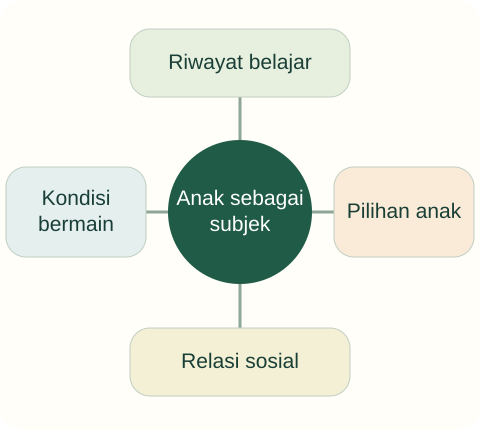
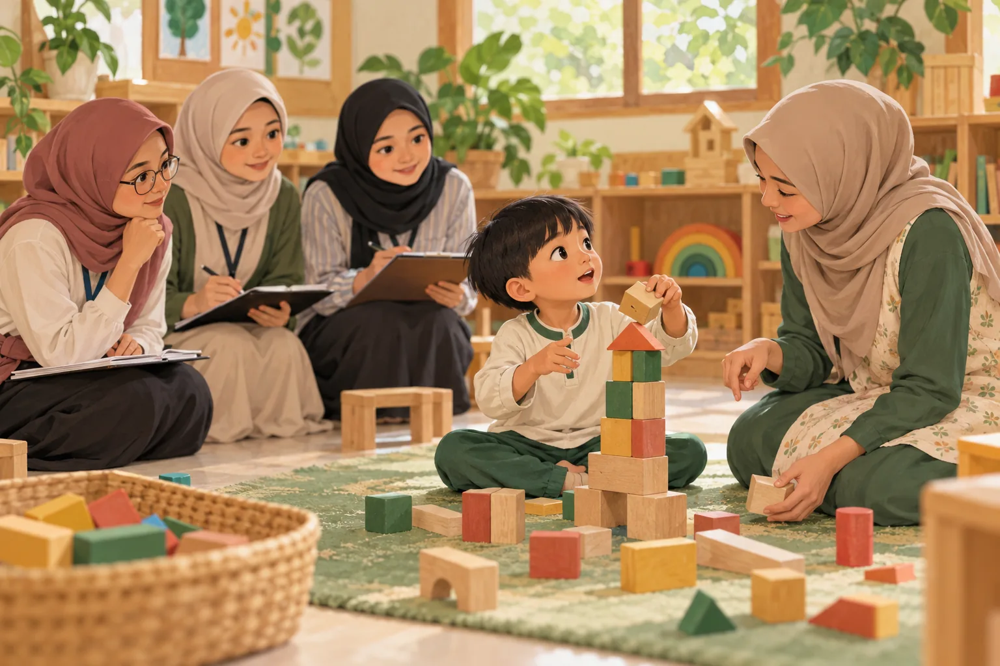

Tujuan pembelajaran
- Membedakan dapat dididik dan perlu dididik
- Menjelaskan peran anak dan kondisi lingkungan
- Mengusulkan bantuan yang menjaga kesempatan anak mengambil keputusan
Dapat dan perlu dididik
Dapat dididik menunjuk pada kemungkinan manusia berubah melalui pengalaman dan bimbingan. Perlu dididik menunjuk pada ketergantungan manusia pada hubungan sosial untuk memasuki dunia bahasa, nilai, dan pengetahuan bersama. Anak membawa keadaan tubuh, minat, dan riwayat pengalaman yang beragam. Kemampuan yang mulai tumbuh terlihat dari apa yang dapat ia lakukan dalam keadaan tertentu. Pernyataan “ia belum ikut bercerita ketika berada di kelompok besar” memberi dasar tindakan yang lebih baik daripada sebutan “anak ini pasif”.
Pengalaman terbentuk dalam interaksi
Dewey (1938/1997) menempatkan pengalaman pada pertemuan antara anak dan kondisi lingkungannya. Balok lebar membuka kemungkinan baru, tetapi anak tetap perlu memilih, menguji, dan membaca hasilnya. Bronfenbrenner (1979) memperluas perhatian ke lingkungan anak, termasuk kegiatan dan hubungan di rumah serta satuan pendidikan. Informasi keluarga dapat membantu guru memahami kapan seorang anak banyak berbicara atau benda apa yang akrab baginya. Pengetahuan itu dipakai untuk merancang kesempatan yang lebih sesuai.
Anak sebagai subjek
Anak disebut subjek pendidikan karena ia mengalami, menafsirkan, dan ikut mengarahkan tindakannya. Partisipasi dapat muncul melalui ucapan, isyarat, pilihan, atau penolakan. Konvensi Hak Anak memberi landasan untuk mempertimbangkan pandangan anak sesuai usia dan kematangannya. Pendidik tetap memegang tanggung jawab menjaga keselamatan dan menjelaskan batas. Pada permainan balok, anak dapat memilih cara menyusun. Guru dapat membatasi tinggi bangunan jika ada risiko menimpa teman.
Perbedaan perkembangan dan belajar sepanjang hayat
Pedoman praktik sesuai perkembangan dari NAEYC (2020) mempertimbangkan pola umum perkembangan, keunikan anak, serta konteks sosial dan budaya. Tiga pertimbangan ini membantu guru memilih dukungan awal dan meninjaunya setelah melihat respons anak. Begitu pula ketika orang dewasa mempelajari cara baru mendidik, pengalaman sebelumnya menjadi bekal dan dapat berubah melalui latihan serta refleksi. Usia dini memberi dasar penting bagi pengalaman berikutnya. Pengaruhnya tetap berlangsung bersama kesempatan belajar yang tersedia sepanjang hidup.
Diagram konsep

Jika anak memiliki potensi, mengapa ia masih memerlukan pendidikan?

Saat membangun menara, Aira beberapa kali memilih balok kecil sebagai alas. Setelah menaranya jatuh ia memperhatikan temannya memakai balok lebar. Guru menyediakan dua pilihan alas dan memberi waktu kepada Aira untuk mencoba.
- Bahan apa yang bisa dipilih anak?
- Tindakan apa yang masih dilakukan oleh anak?
Pembahasan kasus
Jatuhnya menara menunjukkan hasil dari satu susunan. Pilihan alas, pengamatan terhadap teman, dan percobaan ulang memperlihatkan bagaimana Aira ikut membentuk pengalamannya. Tanyakan apa yang ia perhatikan, lalu amati apakah pilihannya berubah pada bangunan berikutnya.
Buka contoh penalaran setelah mencoba
Tunjukkan satu cara guru membantu tanpa menyelesaikan menara.
Guru menawarkan dua alas dan meminta anak mencoba. Perubahan pilihan pada bangunan berikutnya dapat dicatat.
Latihan terbimbing
Ubah pernyataan “anak ini tidak mandiri” menjadi catatan netral tentang satu peristiwa memakai sepatu. Tulis tindakan yang ia mulai sendiri, bantuan yang ia minta, dan kesempatan mencoba berikutnya.
Latihan mandiri
Seorang anak berbicara lancar di rumah dan jarang berbicara di kelas. Ajukan dua penjelasan yang dapat diperiksa dan satu cara memperluas partisipasinya.
Lihat pembahasan
menyediakan pilihan alas dan memperhatikan upayanya sebelum menambah bantuan
Pilihan yang konkret memberi kesempatan untuk bertindak dan memberi guru informasi tentang bantuan yang diperlukan.
Refleksi calon pendidik
Keputusan apa yang dapat saya serahkan kepada anak dengan tetap menjaga keselamatannya?
Catatan hanya disimpan di peramban ini. Tidak dikirim kepada dosen.
Referensi dan bacaan pendamping
- Dewey, J. (1997). Experience and education. Touchstone. (Original work published 1938)Bacaan klasik tentang kualitas pengalaman pendidikan. Tahun kutipan dibedakan antara karya asli dan terbitan ulang.
- Bronfenbrenner, U. (1979). The ecology of human development: Experiments by nature and design. Harvard University Press.Kerangka ekologis klasik. Jangan menyamakan buku ini dengan seluruh perkembangan model bioekologis berikutnya.
- National Association for the Education of Young Children. (2020). Developmentally appropriate practice: A position statement.Kerangka profesi berbasis riset, bukan regulasi Indonesia. Pertimbangkan pola perkembangan, individualitas, dan konteks. Ringkasan konsep tidak menggantikan dokumen asli.
- United Nations. (1989). Convention on the Rights of the Child.Pasal 12 tentang kesempatan menyampaikan pandangan dan perhatian sesuai usia serta kematangan.